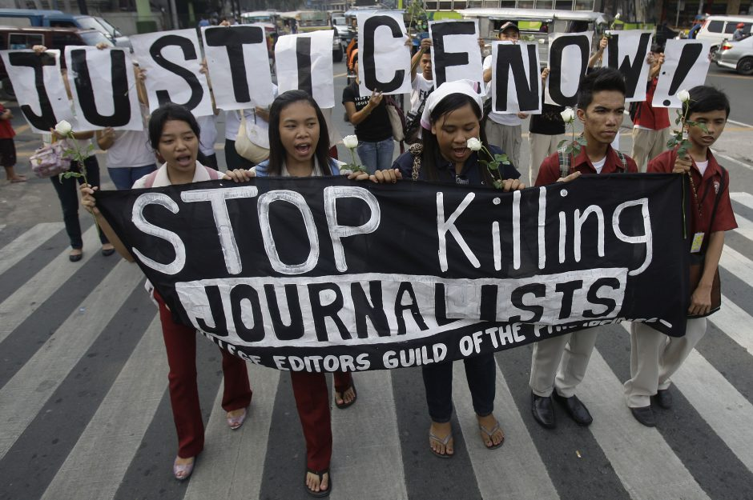

PH still among deadliest places for journalists
By: Krixia Subingsubing - Reporter / @KrixiasINQPhilippine Daily Inquirer / 05:30 AM October 30, 2021
{kind=link}
MANILA, Philippines — The Philippines remains one of the deadliest countries in the world for journalists , according to a global media watchdog report released on Friday, which again highlighted the dangers faced by media professionals working under hostile governments or weak criminal justice systems.
According to the annual Impunity Index issued by the Committee to Protect Journalists (CPJ), which trains the spotlight on countries where journalists have been killed and the perpetrators remain free, the Philippines ranked seventh on the list, the same as last year, with 13 murders still unsolved.
These cases were cited out of the total of 85 recorded in the country between 1992 and 2021.
Unsolved killings
For this year, the New York-based watchdog took note of the unsolved killings that happened between Sept. 1, 2011, and Aug. 31, 2021, spanning the period from the Benigno “Noynoy” Aquino III administration to the current Duterte presidency.Only nations with five or more unsolved cases are included in the latest index, which this year covers 12 countries.
The Philippines joins war-torn states and authoritarian regimes on the list, which is topped by Somalia this year with 25 unsolved cases.
The list largely remained unchanged from last year. After Somalia, next in descending order based on the number of deaths are Syria, Iraq, South Sudan, and Afghanistan.
At sixth place is Mexico, while on the eighth to 12th spot are Brazil, Pakistan, Russia, Bangladesh, and India.
CPJ noted that no one had been held to account in almost 81 percent of the media killings worldwide in the last 10 years.
In a statement accompanying the report, CPJ deputy editorial director Jennifer Durham said the rankings reflected how “conflict, political instability, and weak judicial mechanisms perpetuate a cycle of violence against journalists.”
“Illustrating the endemic nature of this lack of accountability, all 12 of the countries on the index have featured multiple times since CPJ first ranked the data in 2008, and seven have appeared every year,” Durham added.
Last year, CPJ noted only one unsolved murder in the Philippines: that of Cebu-based radio broadcaster Renante Cortez, who was shot by motorcycle-riding gunmen on July 22, 2020. Cortez was then a host of a political news program on dyRB radio station in Cebu City.